Nagri
While both Bengali and Assamese are written using the Eastern Nagri script (পূর্বী নাগরী [pu:rbi: naɡɔri:] or Bengali-Assamese script), Sylheti was traditionally written using a unique script, the Siloti Nagri script (which is currently known by various names and spellings, including Sylhet Nagri, Sylheti Nagri, Syloti Nagri, Sylot Nagri, Siloṭi Nagri (with a Sanskritic diacritic to indicate retroflex sounds), Siloti Nagri, Silot Nagri, ꠍꠤꠟꠐꠤ ꠘꠣꠉꠞꠤ [silɔʈi naɡri], ꠍꠤꠟꠐ ꠘꠣꠉꠞꠤ [silɔʈ naɡri] … or simply Nagri). The Syloti Nagri script/alphabet:
1.may date back to the 1500s or older
2.is better suited to Sylheti’s sound system
3.had 19th-century printing presses
This historical script fell out of usage in the mid to late 20th century, but it is experiencing a revival.
~ Sylheti Project – SOAS in Camden 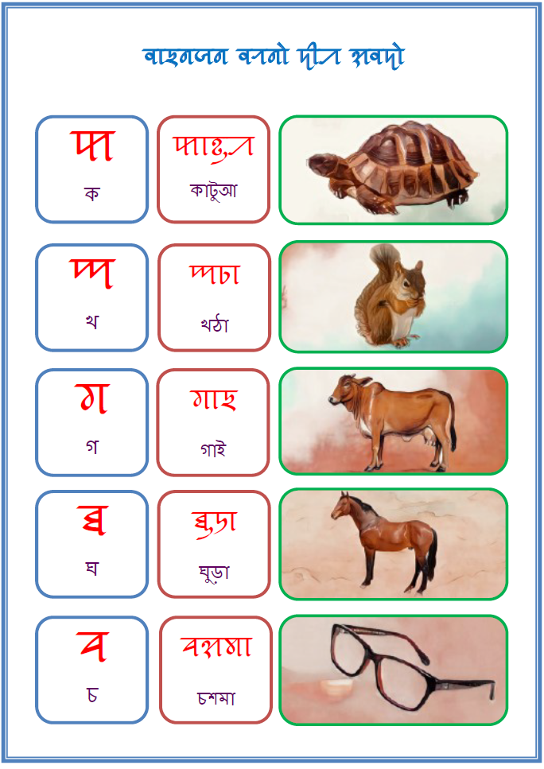
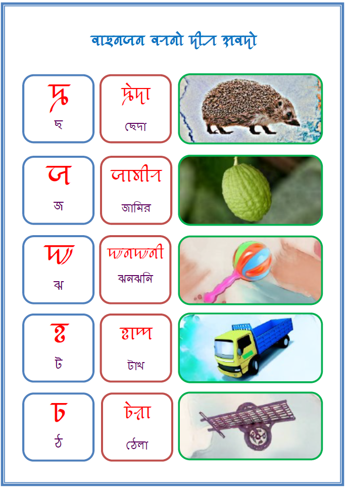
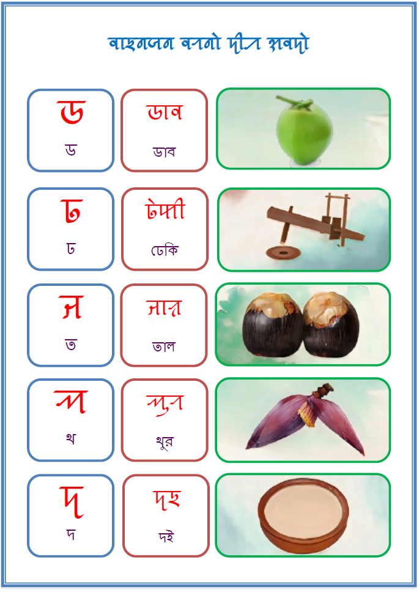
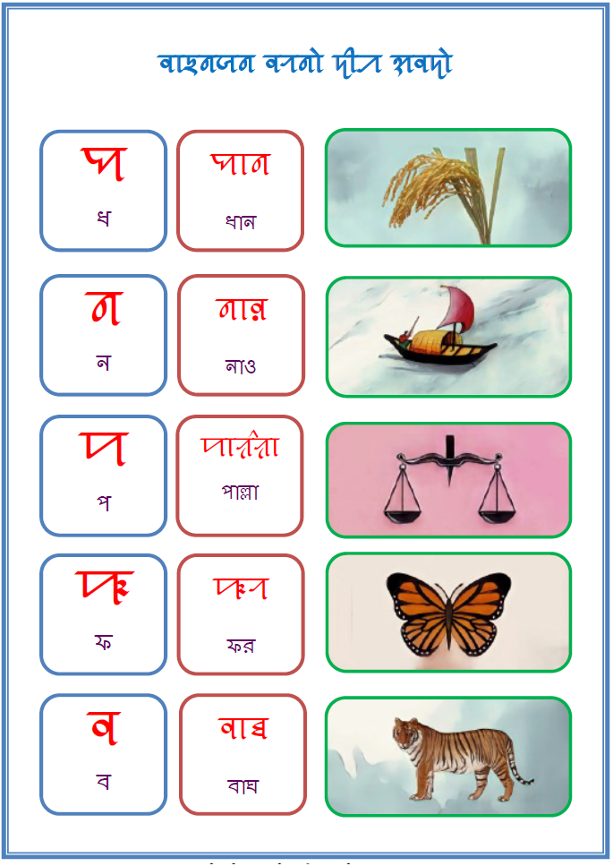
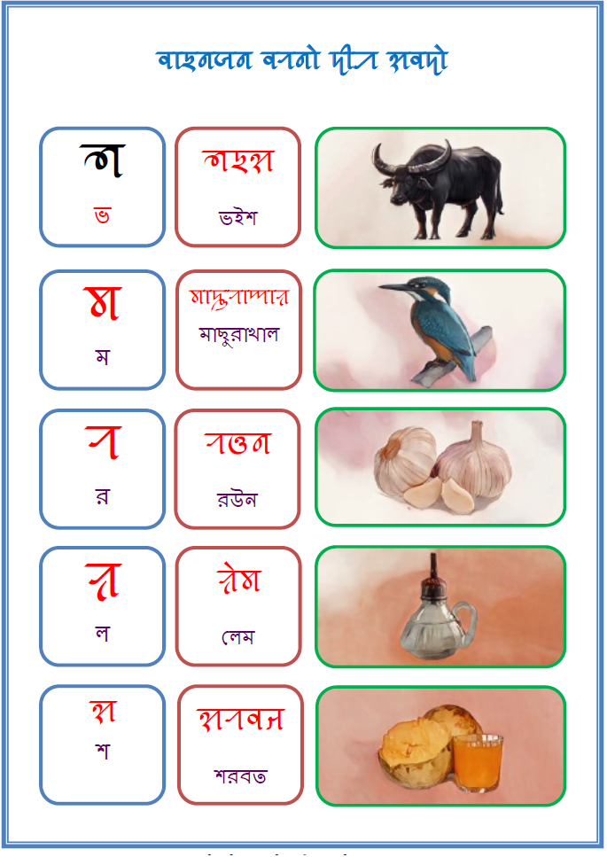
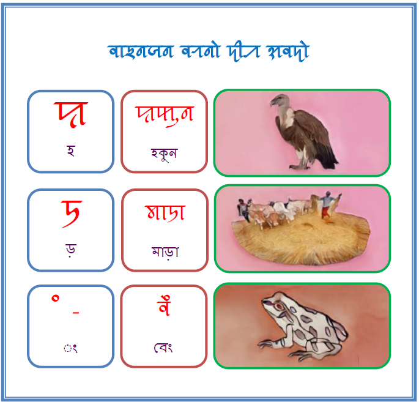
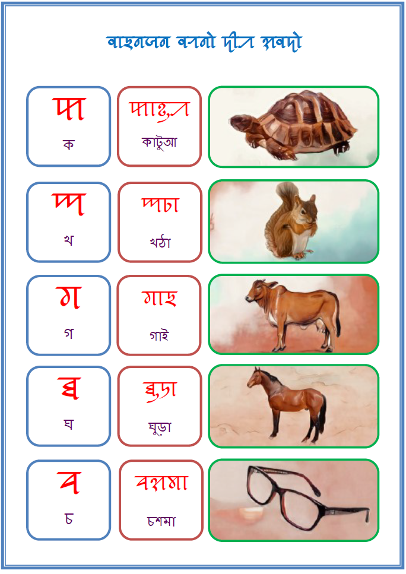
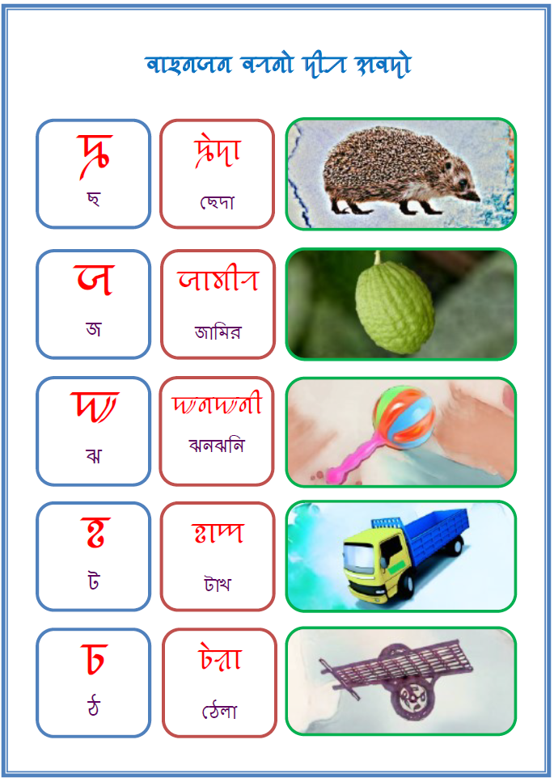
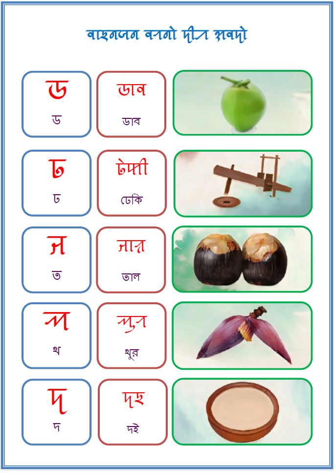
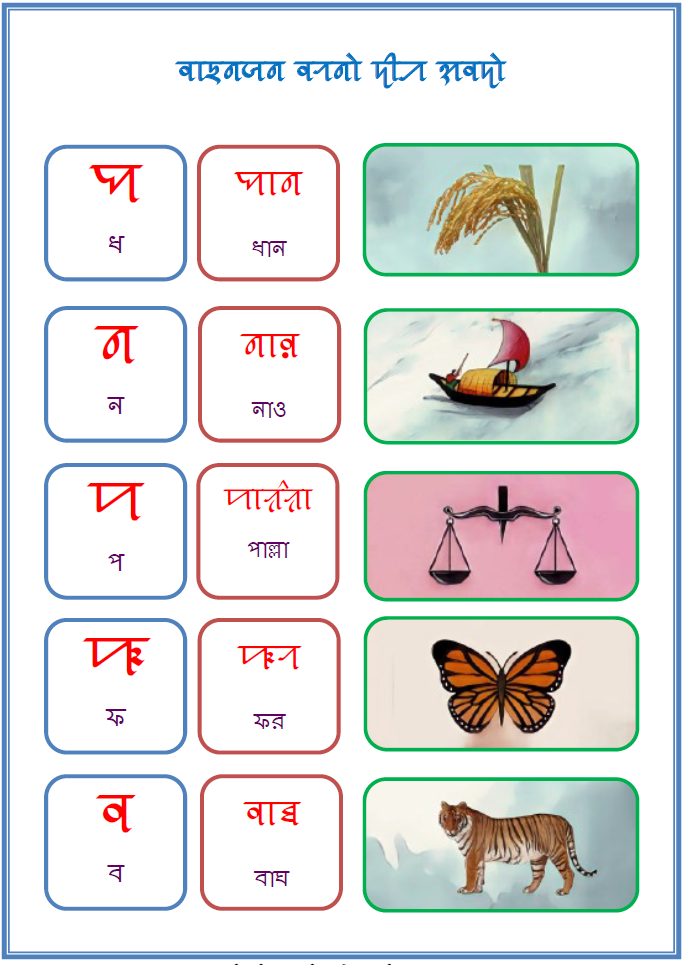
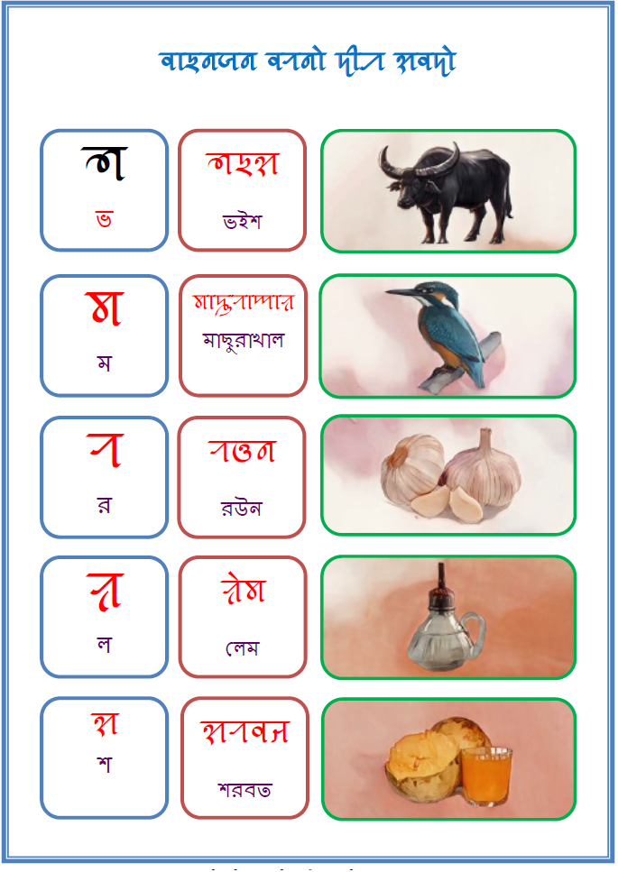
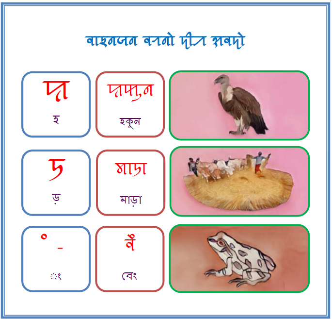